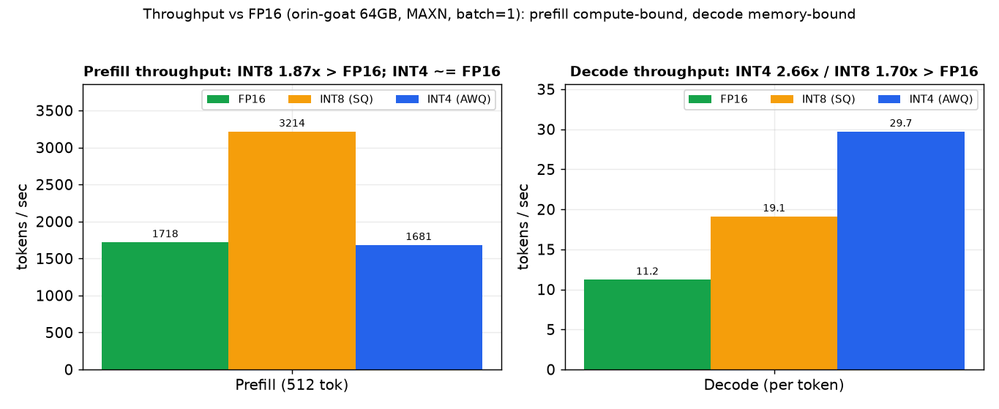
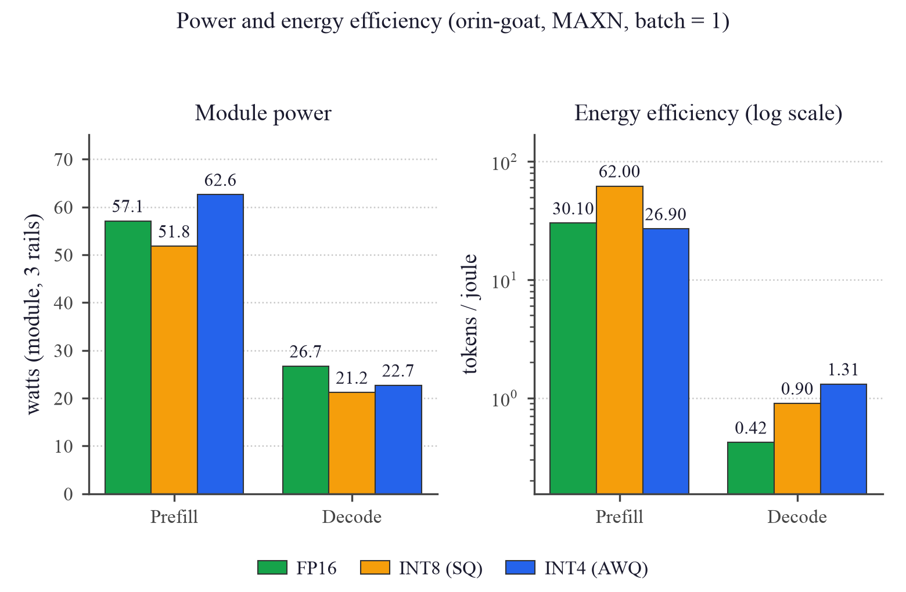
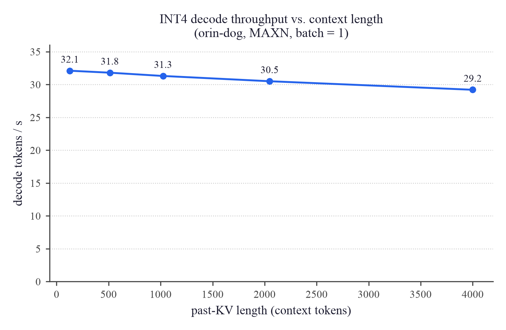
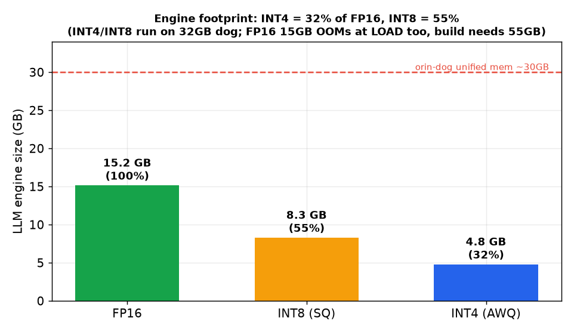
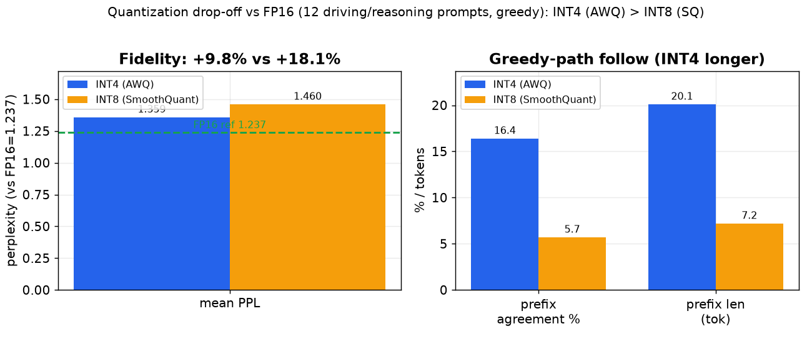
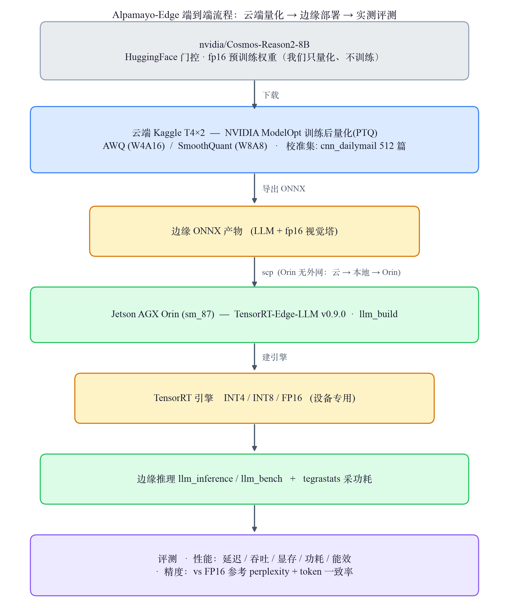

Alpamayo-Edge：8B 多模态大模型的 Jetson Orin 量化部署实战
INT4 AWQ INT8 SmoothQuant
Jetson Orin sm_87 TensorRT-Edge-LLM
端到端跑通
摘要
把 NVIDIA Cosmos-Reason2-8B （自动驾驶物理场景推理 VLM，非轨迹预测器，属"感知 + 推理 / 可解释"层）用 TensorRT-Edge-LLM 量化为 INT4 (AWQ) 与 INT8 (SmoothQuant) ，部署到 Jetson Orin (sm_87) 端到端跑通推理，并测出吞吐 (TPS) / 延迟 / 显存 (VRAM) / 功耗 / 能效完整画像，再用 FP16 参考量化掉点。零预算 · 零训练 · 全 Orin。
核心结论：
decode 看 INT4、prefill 看 INT8 ——两阶段各有最优精度/性能档位。INT4 在本工作负载既更快 （decode 快 1.57×）又更保真 （掉点 +9.8% vs INT8 +18.1%）、且更省显存 （−42%）。
组件 输入 输出 Cosmos-Reason2（本项目部署） 图像 / 视频帧 + 文字问题 文字推理 ：场景描述、风险判断、行动建议Alpamayo-R1 VLA（暂缓轨道） 多相机图像 + 轨迹历史 轨迹（6.4s / 64 路点）
实验过程中的问题、根因与解决（含 FMHA 崩溃根因等）单独归档于 问题记录 PROBLEMS.md ，本页不含。
一、核心结果
📊 图表可点击放大 （再点任意处或按 Esc 还原）。不熟悉指标可先展开下面的说明，或见「方法细节」。
▸ 指标怎么读（点开）
Prefill 预填充 一次性并行"读完"输入 prompt 的所有 token（读题阶段）。计算密集，看整体处理速度。 Decode 解码 逐个 token 自回归生成输出（答题阶段），每步只出 1 个 token。访存密集——每步都要把权重从显存搬一遍，权重越小越快。 TPS (tokens/s) 吞吐 = 每秒处理/生成的 token 数，越高越好。本文性能主指标。 ITL 单 token 延迟 Inter-Token Latency，decode 阶段生成每个 token 的耗时（ms），越低越流畅；TPS ≈ 1000 / ITL。 tokens/J 能效 每焦耳能量处理的 token 数（= TPS ÷ 功耗 W）。越高越省电，是电池/散热受限的边缘设备的关键指标。 VRAM 显存 引擎加载后占用的显存。Orin 是 CPU/GPU 共享的 29 GB "统一内存"。 perplexity 困惑度 模型对一段文本的"意外程度"，越低=越符合模型预期。这里用 FP16 原模型给量化输出打分，增幅越小 = 量化越保真 。 一致前缀 贪心解码下，量化输出与 FP16 输出逐 token 相同的最长开头长度。 W4A16 / W8A8 量化位宽记法：权重 4bit·激活 16bit（AWQ）／ 权重 8bit·激活 8bit（SmoothQuant）。 MAXN · sm_87 MAXN = Orin 最高性能功耗模式；sm_87 = Orin GPU 的 CUDA 架构代号（Ampere）。
1.1 性能：延迟 / 吞吐 / 显存 / 功耗 / 能效

横轴 ：Prefill(512 token 输入) / Decode(每 token) 两阶段竖轴 ：吞吐 TPS (tokens/s，越高越快)结果 ：prefill INT8 快 1.9×；decode INT4 快 1.57×分析 ：prefill 计算密集(并行大矩阵乘)→INT8 原生张量核占优；decode 访存密集(每步搬全部权重)→INT4 权重小更快 ⇒ 交互式选 INT4、预填充/批量选 INT8
横轴 ：Prefill / Decode 两阶段(两子图同)竖轴 ：左=整机功耗(瓦，三电轨之和)，右=能效 tokens/J (对数轴，越高越省电)结果 ：INT8 prefill 能效高 2.3×，INT4 decode 能效高 1.64×分析 ：能效=吞吐÷功耗，各阶段吞吐赢家功耗还不劣；边缘设备电/热受限，能效常比绝对速度更关键
横轴 ：上下文长度(past-KV token 数，128→4000)竖轴 ：INT4 decode 吞吐 TPS (tokens/s)结果 ：上下文涨 31× 吞吐仅降 9%分析 ：decode 延迟由权重搬运主导、注意力占比小，故长上下文几乎不掉速 ⇒ 适合长对话/长文档
横轴 ：三类产物(Orin LLM 引擎 / 打包 tgz / 载入显存)竖轴 ：体积(GB)结果 ：INT4 比 INT8 约省 42%分析 ：LLM 主干 INT8≈INT4 的 1.7×(近 W8A8 vs W4A16 理论 2×，差在共享 fp16 词嵌入/视觉塔)；省下的显存可留给更长 KV cache 或多模型并存
指标（Orin sm_87 / JetPack 6.2 / CUDA 12.6 / TRT 10.7 / MAXN, batch=1） INT4 (AWQ) INT8 (SmoothQuant) Prefill 延迟 / 吞吐（512 tok） 300.98 ms / 1701 TPS 157.45 ms / 3252 TPS Decode ITL / 吞吐（单 token） 32.34 ms / 30.9 TPS 50.65 ms / 19.7 TPS Prefill 能效 27.5 tokens/J 62.8 tokens/J Decode 能效 0.82 tokens/J 0.50 tokens/J 引擎载入显存 (VRAM) ~4.6 GB ~7.9 GB 真实生成质量 ✅ 连贯正确 ✅ 连贯正确
补充 sweep 与多模态（INT4）：
Prefill inputLen 128→1024：吞吐 1485→1720 TPS（1024 趋稳），batch=1 已算力饱和、批处理无聚合增益。
Decode pastKVLen 128→4000（涨 31×）：吞吐仅掉 9%，长上下文扩展性好。
多模态图像路径（视觉塔 + deepstack + INT4 LLM）端到端验证正确。
1.2 精度：量化掉点（vs FP16 基线）

横轴 ：左=平均 perplexity 指标，右=与 FP16 的一致性(一致前缀占比 % / 一致前缀长度 token)竖轴 ：左=perplexity(越低越贴近 FP16，绿虚线为 FP16 基线 1.237)，右=百分比 / token 数结果 ：INT4(AWQ) 掉点 +9.8% 显著小于 INT8(SmoothQuant) +18.1%，且贪心路径跟随 FP16 更久分析 ：INT4(W4A16 纯权重、激活保 16bit)对校准集域错配更鲁棒；INT8(W8A8)连激活也量化更敏感 → 掉点更大。结合性能，本负载下 INT4 既更快又更保真
指标 FP16 参考 INT4 (AWQ) INT8 (SmoothQuant) 平均 perplexity（越低越好） 1.237 1.359 1.460 PPL 相对 FP16 增幅 — +9.8% +18.1% 与 FP16 贪心一致前缀占比 100% 16.4% 5.7%
二、方法细节（可复现）
2.1 方法总览（端到端流程 · 为什么这么设计）

端到端流程：源权重 → 云端量化导出 ONNX → Orin 建引擎 → 边缘推理 → 性能/精度评测。 描述 ：预训练权重在云端一次性量化并导出为 ONNX，传到 Orin 编译成设备专用 TensorRT 引擎，再在边缘实测性能与精度两轴。
为什么这么设计（关键选择的理由）：
8B（16 GB）本地 3070（8 GB）装不下、Orin 无外网 → 量化这类一次性重活放免费云 T4×2 。
以 ONNX 作跨平台中间表示 → 云端导出与边缘建引擎解耦、可复用。
TensorRT 引擎按 GPU 架构（sm_87）特化 → 必须在目标设备本地构建 。
生成式 VLM 无标注任务集 → 精度用 FP16 参考的相对退化 （perplexity / 一致率），与性能轴分离评测。
2.2 方法细节（配置与口径）
模型 / 权重 ：nvidia/Cosmos-Reason2-8B只做推理量化，不训练/微调 ；revision 未 pin）。实测架构：36 层 · hidden 4096 · GQA 32/8 头 · RoPE 262144 · vocab 151936（Qwen2.5-VL 系 8B backbone）。量化 ：NVIDIA ModelOpt 训练后量化(PTQ)。INT4 = AWQ(W4A16)、INT8 = SmoothQuant(W8A8)。校准集 = 工具默认的 CNN/DailyMail 3.0.0 前 512 篇 `article`（新闻文本、纯文本路径、非驾驶域 ——见讨论 caveat）。视觉塔未量化（保 fp16）。数据 ：精度评测用 12 条手写 驾驶/推理 prompt（无标注、非标准 benchmark ）；性能用 llm_bench 合成序列。无带标注的下游任务正确率 。设备 / 框架（实测版本） ：Jetson AGX Orin Developer Kit （sm_87，统一内存 29GB，MAXN）· L4T R36.4.4 (JetPack 6.2) · CUDA 12.6.11 · TensorRT 10.7.0.23 · TensorRT-Edge-LLM v0.9.0 @1ac0f2b。云端量化/参考：Kaggle 2× Tesla T4 (sm_75)。指标 ：延迟/吞吐 = llm_bench E2E（mean±std，warmup 3 + iter 10；prefill inputLen=512、decode pastKVLen=512）；功耗 = tegrastats 三轨之和；能效 = TPS ÷ W；掉点 = FP16 模型对输出的 teacher-forced perplexity + token 一致率（相对退化口径，非纯量化误差）。INT4 已重跑复现（在 run-to-run 噪声内一致）。
模型来源、数据集、指标定义与测法、校准集及影响的完整可复现细节见 docs/METHODOLOGY.md 。
三、思考讨论
选型结论：decode 看 INT4，prefill 看 INT8
① 交互式 / 单流低延迟 / 省电 / 精度敏感 →
INT4 ：decode 吞吐高 57%、能效高 64%、显存省 42%、掉点更小。
② 批量 / 长上下文 / 高吞吐 →
INT8 ：prefill 快 1.9×、能效高 2.3×、功耗更低。
两者在各自阶段既更快又更省电，按场景选档即可。
为何 INT4 掉点反而更小？—— 校准域错配的合理推断
①
机制 ：INT4 是 AWQ（W4A16）纯权重量化、激活保 16bit，对
校准集域错配 （此处校准用新闻文本、部署是驾驶推理）更鲁棒；INT8 SmoothQuant（W8A8）
连激活也量化 ，对校准质量更敏感 → 掉点更大（+18.1% vs +9.8%）。
②
证据强度 ：机制明确，但
未做消融证明 ；可验证的后续 = 用驾驶域校准集重量化再比。
③
口径 ：PPL 是对贪心输出的相对打分（看增幅），对比的是已部署 TRT 引擎 vs FP16 PyTorch，为"量化 + 引擎 + 后端"的总部署差距。
能用来干什么
可复用的边缘量化部署方法论 ——同套流程可把任意 TRTEdge 支持的 LLM/VLM 部署到任意 Jetson，并给出量化选型依据。可实时查询的车载场景推理系统 ——喂驾驶图像 + 问题，~30 TPS @ ~40W 的边缘推理，可作感知理解 / 安全监控 / 可解释模块。完整的 INT4-vs-INT8 边缘权衡实证 ——延迟 / 吞吐 / 显存 / 功耗 / 能效 / 上下文扩展性 / 掉点全维度。
诚实的边界
无轨迹预测 ：ADE/FDE vs CVM 属于 VLA 轨道（Alpamayo-R1-10B FP16），大工程，暂缓。精度轴为相对退化口径 ：有 FP16 参考下的掉点数字，但为"量化+引擎+后端"的总部署差距，非纯量化误差，也非带标注的下游任务正确率。校准集为通用新闻文本、非驾驶域 ：可能放大掉点；驾驶域校准的对比属未做的消融。量化标的从 Alpamayo 改为 Cosmos，因 Alpamayo 只支持 FP16、不能量化（工具硬约束）。